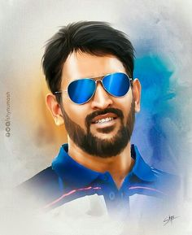
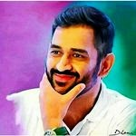

MS Dhoni: Life-History & Success Story


Life-History & Success Story
When we talk about the sport that is popular in India, we can name a very few. One such sport is Cricket. Even though it has its roots in England, but the fans and fame for Cricket in India are much more than any other games. The recent event of IPL auction is a good example to prove it. Nowadays, almost every youngster or kid have a cricketer as their role model that we sometimes forget the fact that “Hockey” is our National Game. When we speak about the famous cricketers, we can name a few, like Kapil Dev, Sunil Gavaskar, and Gundappa Viswanath. Then it moved to Anil Kumble, Virender Sehwag, Sachin Tendulkar, Sourav Ganguly as the second generation. Now among the new generation cricketers, there are some names which have earned most popularity such as, Mahendra Singh Dhoni, Virat Kohli, Rohit Sharma, Shikhar Dhawan etc. Among these latest generation players, Mahendra Singh Dhoni is very famous because of his “Coolness”. “Captain cool”, “Mahi”, “MSD” are some fan made names for him. He rose to fame slowly and his story of success is very inspiring to read.
MS DhoniBirth And Childhood
Mahendra Singh Dhoni or MS Dhoni was born on 7th July 1981 in Ranchi, Bihar and he calls himself as a Hindu Rajput. His father Pan Singh worked in junior management positions in MECON and his mother Devaki Devi is a housewife. Dhoni studied at DAV Jawahar Vidya Mandir, Shyamali, Ranchi, where he excelled in sports such as badminton and football and was selected at district and club level competitions.
Accidental Adventure
MS Dhoni Childhood
When he was in his school football team, he was contributing as a goalkeeper. Once his football coach sent him to fill in as the wicketkeeper of the cricket team, he impressed everyone with his wicket-keeping skills. This secured him a permanent spot as the regular wicketkeeper in the Commando cricket club team for three years during the period 1995-98. He continued to do his wicket keeping job well and got the attention of everyone and finally selected for Vinoo Mankad trophy Under 16 championship team during the period 1997-1998.
Early Career
MS Dhoni Early Career
During the period 2001-2003, he worked as a Train Ticket Examiner (TTE) at Karaghpur Railway station, which is under South Eastern Railway in Midnapore district in West Bengal. His colleagues remember him as a very honest, straightforward employee with little mischievous by nature. Once Dhoni and his colleagues covered themselves up with a white blanket and wandered as a ghost in midnight in the railway quarters, which frightened everyone as they thought it was a ghost.
Selection in Bihar Cricket Team
Initially, in 1998, Dhoni was selected by Deval Sahay to play for the Central Coal Fields Limited (CCL) team. Till that time, Dhoni who was in class 12th had played only school and club cricket and no professional cricket. During those days when he was playing for CCL, Deval Sahay used to gift him Rs 50 for each six that he hit in Sheesh Mahal tournament cricket matches. Deval Sahay was the one who tried pushing Dhoni into Bihar cricket team. Dhoni was selected in the Bihar U-19 squad for the 1998–99 season and later was included in the East Zone U-19 squad for the CK Nayudu trophy.
Ranji Trophy And Jharkhand Cricket Team
MS Dhoni Cricket Career
Dhoni made his debut in Ranji trophy for Bihar in the year 1999-2000. He played for Bihar team for three years continuously for the period 1999/2000, 2000/2001, 2001/2002. Later Dhoni contributed three half-centuries in Ranji trophy and couple of half-centuries in Deodhar Trophy for the season 2002-2003. Later the TRDO officer Prakash Poddar was attracted towards Dhoni’s performance when MSD was playing for Jharkhand team in Jamshedpur in 2003. Poddar later sent a report to National Cricket Academy regarding Dhoni’s performance.
Entry in India A-Team
In the 2003/04 season, Dhoni got selected for India A squad for a tour of Zimbabwe and Kenya because of his continuous efforts. He scored back to back centuries and got the attention of the then India captain – Sourav Ganguly. However, Dinesh Karthik was recommended for the Indian squad as wicketkeeper by Sandeep Patil.
ODI Career
MS Dhoni ODI Career
Dhoni after delivering good performances in India A team was selected in ODI squad for the Bangladesh tour in 2004/05. Dhoni was also picked for Pakistan series. His initial matches were not the great success. Dhoni’s turning point match came with the Sri Lankan bilateral ODI series (October-November 2005), wherein the third ODI, Sri Lanka had set the target of 299 among which Dhoni batted an unbeaten score of 183 runs in 145 balls, finally winning the game for India. Due to his consistent performance in the later ODI’s with Pakistan and Bangladesh, Dhoni overtook Ricky Ponting and became number one in the ICC ODI Rankings for batsmen on 20 April 2006.
2007 World Cup
It was one of the tough times for Dhoni. In 2007 world cup scenario, India unexpectedly walked out of the world cup series, after losses to Bangladesh and Sri Lanka in the group stage. Dhoni was out for a duck in both these matches and scored just 29 runs in the tournament. Because of this bad performance, Dhoni faced the anger of his fans and his house which was under construction in his hometown Ranchi got destroyed by political activists.
Rise as a Captain
MS Dhoni as a Captain
Dhoni, who earlier received a ‘B’ grade contract in 2005, because of his excellent performance was later awarded an ‘A’ grade contract in June 2007. He was also elected as the captain of the Indian squad for the World Twenty20 in September 2007 based on the recommendation of Sachin.
2011 World Cup
MS Dhoni 2011 World Cup
Unlike 2007 world cup, India had a good start to 2011 world cup tournament beating Bangladesh, Netherlands, Ireland and West Indies in the group stage under Dhoni’s captainship. Even though they lost to South Africa they tied with England. India beat Australia in quarterfinals and arch-rivals Pakistan in the semi-final. In the final match with Sri Lanka which took place at Mumbai, Dhoni played a knock of 91* to help India win the cup. He was awarded the Man of the Match award.
2015 World Cup
In 2015 world cup, India performed well at the initial matches and marched towards semi-finals with ease. But they lost to Australia in the semi-finals held at the Sydney Cricket Ground.
Test Career
Attracted by his good performance against Sri Lanka in ODI, Dhoni replaced Dinesh Karthik for the Indian Test wicket-keeper in 2005. Dhoni made his maiden half-century in the second test and his quick scoring rate (half century came off 51 balls) helped India in setting a target of 436 and the Sri Lankans were bowled out for 247. India’s matches with Pakistan and West Indies made him look like an aggressive player. In 2009 series with Sri Lanka, Dhoni scored two centuries thereby leading India to a 2-0 victory. MSD played his last test series in India’s tour of Australia in the season 2014–15 captaining India in the second and third tests. Following the third Test in Melbourne, Dhoni announced his retirement from the test series.
T-20 World Cup
Dhoni was chosen to lead the Indian team in World T20 in 2007. His first match as captain against Scotland was washed off. Later he led India to the ICC World Twenty20 trophy in South Africa, with a victory over Pakistan in finals which happened on 24 September 2007, and became the second Indian captain to have won a World Cup in any form of cricket, after Kapil Dev.
MS Dhoni IPL
For Indian Premier League, MSD was contracted by the Chennai Super Kings for 1.5 Million USD, which made him the most expensive player in the IPL during the first season. Under his captaincy, Chennai Super Kings had won two Indian Premier League titles and the 2010 Champions League Twenty20. After the two years suspension of CSK, he was contracted by Rising Pune Supergiant for 1.9 Million USD in and was given the captainship role. However, his team finished in 7th place. In 2018, Dhoni was again selected by Chennai Super Kings after its return and by his three half-centuries and with contribution of other players,CSK won the IPL title 3rd time.
Personal Life MS Dhoni Family
 Dhoni married his childhood friend Sakshi Singh Rawat, who studied with her in the DAV Jawahar Vidya Mandir on 4th July 2010 in Dehradun. Even though their wedding was rumoured to be a sudden one, took place one day after the couple got engaged but the Bollywood actress Bipasha Basu, a close friend of Dhoni, informed the media that the wedding was planned for months and was not a spur of the moment decision. The couple is blessed with a baby girl in the year 2015 named her Ziva.
Dhoni married his childhood friend Sakshi Singh Rawat, who studied with her in the DAV Jawahar Vidya Mandir on 4th July 2010 in Dehradun. Even though their wedding was rumoured to be a sudden one, took place one day after the couple got engaged but the Bollywood actress Bipasha Basu, a close friend of Dhoni, informed the media that the wedding was planned for months and was not a spur of the moment decision. The couple is blessed with a baby girl in the year 2015 named her Ziva.